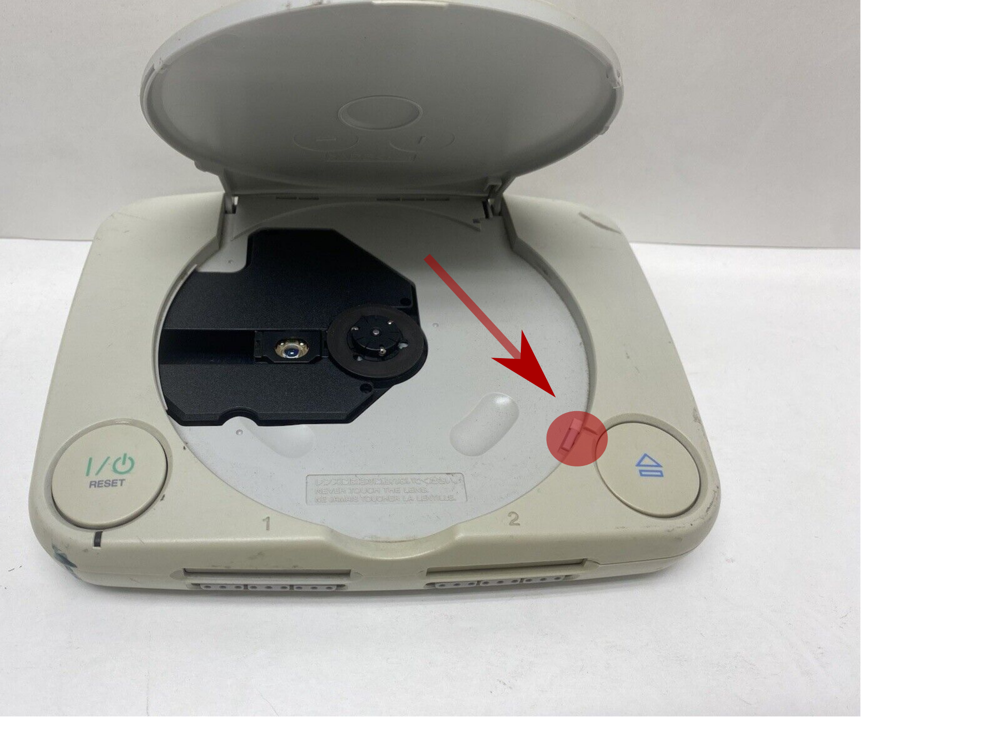
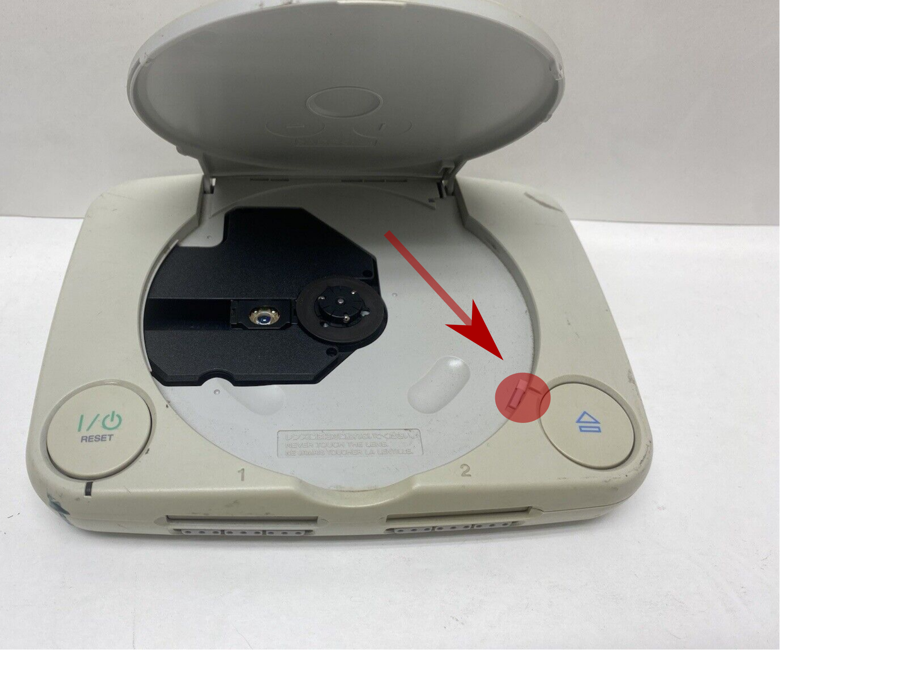
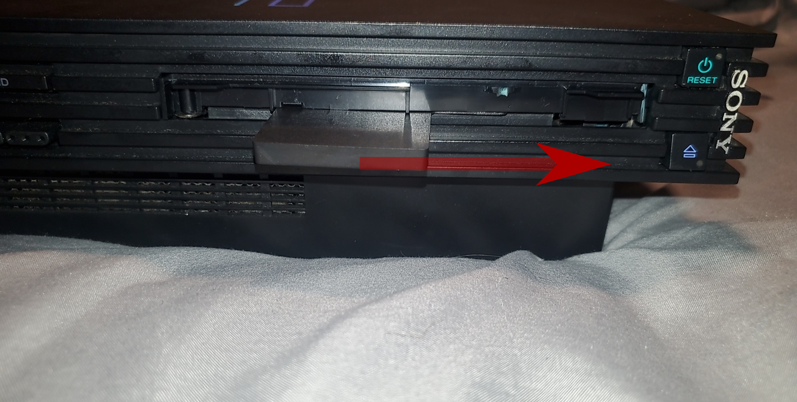
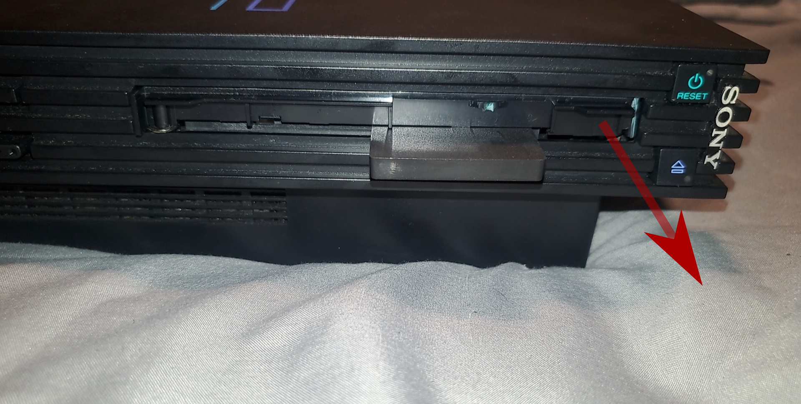
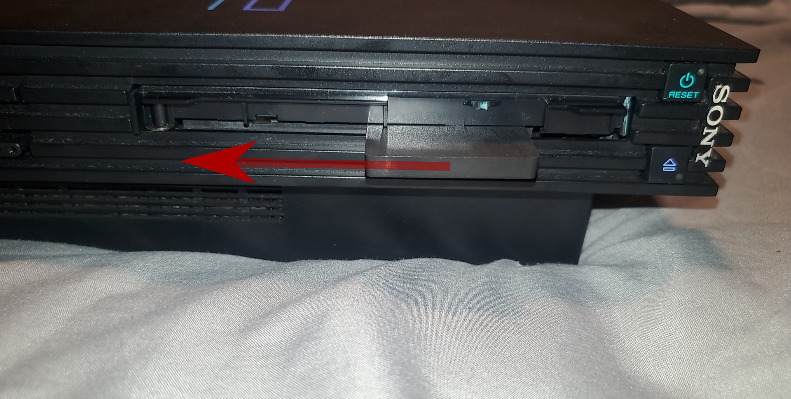

Brought to you by MottZilla, Alex Free, and Patchouli (karehaani). Built on the work of many others.
Tonyhax International is a fork of the Tonyhax "Software backup loader exploit thing for the Sony PlayStation 1" originally created by Socram8888. Tonyhax International is developed by Alex Free and MottZilla with many new features and upgrades compared to the original Tonyhax, as described below:
| Tonyhax International | Tonyhax |
|---|---|
| Supports all Japanese/American/European PS1 consoles, as well as Japanese/American/European PS2 consoles with model number SCPH-10000 to SCPH-39000. | Supports American/European PS1 consoles, as well as American/European PS2 consoles with model number SCPH-39000 and lower only. |
| Can be flashed to a GameShark or other cheat device (via a flasher CD or serial cable) that starts the Tonyhax International loader automatically when the PS1 console (SCPH-750X models and older) is powered on. | No GameShark/cheat device support. |
| Supports TOCPerfect patching for PS1 DemoSwap Patcher which automatically corrects the TOC data and unlocks the drive if possible when booting the patched backup CD-R via a swap trick or other methods. | No TOCPerfect patching support. |
| Can be compiled on any operating system that supports Crosstool-NG using a script that builds a local tool chain within the source directory that does not install anything into your system. | Only supports being compiled on Debian 10/Windows Subsystem for Linux. |
Changes:
The Tonyhax International loader is the program that is booted on any PS1 or an early PS2 that enables the use of backup CD-Rs or import PS1 discs. The Tonyhax International loader can be booted on your PS1 with a GameShark/cheat cart, flashed memory card, save game exploit, or CD-R. It provides the ability to properly play backup and import discs on all PS1 consoles, and early PS2 consoles (Japanese, USA, and PAL up to SCPH-39000). If you are using any Japanese console, at least one real NTSC-J PSX game disc is required. No real PSX game disc is required for USA/PAL consoles.
Available Boot Methods:
Once the Tonyhax International loader boots, you will see the text Put in a real NTSC-J PSX game disc, then block the lid sensor unless you are using Tonyhax International in one of the following ways:
The lid sensor is highlighted by the red circle and arrow in the pictures below. On the original grey fat PS1 consoles (SCPH-900X and earlier) it is located in the top right corner, it is is shaped like a circle. Ideally you press it down with a bent pen spring as shown. On the slim PSone consoles (SCPH-10X) it is in the lower right corner to the side of the edge of the CD drive. For these consoles it is best to use a piece of tape or paper to slide in and press it down as shown.

After blocking the lid sensor, your real Japanese PS1 game will spin up and then stop. Once you see the text Put in a backup/import disc, then press X remove either the real NTSC-J PSX game disc or Boot CD from your PS1 console's CD drive. Put in the backup CD-R or import PSX game disc you want to play without unblocking the lid sensor. Once you press X, on most Japanese consoles (SCPH-3500 and newer) you will eventually see the text Sending SetSession, followed by the game booting quickly. If you instead see the text:
Sending SetSessionSuperUltraCommandSmash
Please wait, this may take a few minutes
You have a very early Japanese PSX console (SCPH-1000 or SCPH-3000). These early Japanese PSX consoles take MUCH longer to boot backups with CD Audio in comparison to all other PSX consoles. This is due to a bug in the CDROM BIOS controller firmware versions found in these consoles that Tonyhax International has to work around. The more audio tracks in a backup CD-R, the longer it will take for the game to boot. You can expect this step to take possibly multiple minutes to complete. The console or program is not stuck, please be patient while booting completes as this waiting is unavoidable at this time.
At the end of the loader, the screen will go black, and then your backup CD-R will boot with perfect CD audio playback. Note that you can not unblock the lid sensor while playing the game on Japanese consoles, if you do so the game will stop working. There are some games which span multiple discs. And some of these games (such as Parasite Eve and Crono Cross) that span multiple discs require you to open the CD drive, remove disc 1, insert disc 2, and close the CD drive at some point in the game. If you have to do this on your Japanese console, please instead do the following to work around the limitation:
It is important to note however that most games that span multiple discs allow you to load a game save created on disc 1 while playing disc 2. This means you just need to save at the last point possible on disc 1, and then you can just boot disc 2 like normal and load your game save created earlier on disc 1. Some games however do not allow this as previously mentioned, so for those games you must use the mid-game hot-swap trick described above.
Available Boot Methods:
On these consoles, put in the backup CD-R or import you want to play and close the PSX console's lid when you see the text Put in a backup or import disc, then close the drive lid.
Note: You can skip this part if you are using the ROM in this way (which allows yo to boot the backup CD-R or import completely automatically at power on!):
A brief Starting message will appear. The screen will go black, and then your backup CD-R will boot with perfect CD audio! You also have the ability to open and close the lid as normal, as well as swap to another burned backup CD-R (i.e. swap to the next (burned backup) disc in games that span multiple discs without having to do another swap trick for games like Parasite Eve).
Available Boot Methods:
Japanese PS2 consoles must have the DVD drive tray front panel removed to use Tonyhax International. For the SCPH-10000, you can follow the method below (some newer consoles may slightly differ in the way to remove the DVD drive's front panel).
Turn on the Japanese PS2 console. Eject the DVD drive tray, and while it is open power off the console by either pulling the plug from the wall or PSU in the back of the console, or by flicking the power switch for the PSU on the back of the console. You can not use the power button because then the DVD drive tray will close before the console turns off. Now, flip the Japanese PS2 console upside down like in the image below:

Now bring your focus to the bottom of the opened DVD drive tray. At the very top edge (highlighted in the picture above) is a tab. You want to jam a thin flat head screwdriver in between this tab and the DVD drive tray face plate as shown in the image below. Now, push with the flat head screwdriver to separate the DVD drive face plate from the rest of the DVD drive tray. Be very gentle and only use a direct straight force towards the face plate. Do not go side to side when doing this or you risk breaking off an edge of the DVD drive tray. I am obviously not responsible for any damage you may do by doing this! Once successful, the face plate will become removable. You are free to slide it back on at a later time, it just needs to be off for you to use the Japanese PS2 to boot backup/import PS1 games with Tonyhax International.

With the DVD drive face plate off, flip over the Japanese PS2 console right side up. You can now see a gap at the bottom of the DVD drive. This is where you place the Swap Magic Tool in when using Tonyhax International on your Japanese PS2 console.

Use one of the supported boot methods to start the Tonyhax International loader on the Japanese PS2 console. You will most likely be using the Save Game Exploit, however you could be using some kind of intermediate boot disc to boot the Boot CD as well if you find one that supports Japanese PS1 consoles. Once you see the text Put in a backup/import disc, then press X appear, you need to use a Swap Magic Slide Tool to release the DVD drive to gain access to it without pressing the eject switch. A video tutorial is available that shows how to use the Swap Magic Tool (in general), although the exact steps are also explained below. Once you use the Swap Magic Tool to swap in your import/backup CD-R while booted in the Tonyhax International loader, just press the cross button on your PS2 or PS1 controller to boot and play your game.
Important note: do not eject the PS1 import or backup CD-R from the Japanese PS2 console until your done playing the game. If you do so your game will stop working, and you will have to start Tonyhax International all over again to boot your import/backup CD-R and start playing again.
There are some games which span multiple discs. And some of these games (such as Parasite Eve and Crono Cross) that span multiple discs require you to open the CD drive, remove disc 1, insert disc 2, and close the CD drive at some point in the game. Unfortunately only for Japanese PS2 consoles, you can not do this and there are currently no known workarounds (unlike the hot-swap mid-game swap trick available on the Japanese PS1 consoles). If you get to a point in a game that requires ejecting the drive and putting in a new game, you have to play this part of the game on a different console. It is important to note however that most games that span multiple discs allow you to load a game save created on disc 1 while playing disc 2. This means you just need to save at the last point possible on disc 1, and then you can just boot disc 2 like normal and load your game save created earlier on disc 1. Some games however do not allow this as previously mentioned, so for those games you just have to play the part on another console until you can save on the next disc.
Slide in the Swap Magic Tool like shown in the image below by the arrow. You need to feel around with the Swap Magic Tool to get the hook to latch on internally inside the DVD drive.
Now that your Swap Magic Tool is latched on internally inside the DVD drive, move it straight to the right side. This movement will feel correct and nice when you are properly using the Swap Magic Tool, reassuring you are using it correctly. Once you get to the end of this movement the DVD drive tray will begin to move forward out of the DVD drive, "releasing" it from it's locked state.


Use your hand to pull out the DVD drive tray to gain access to the disc in it. Remove the original NTSC-J PSX game disc, and put in your import/backup CD-R.
With your import/backup CD-R in the Japanese PS2 console, use your hand to push in the DVD drive tray as far as it will go back into the DVD drive.

Now that the DVD drive tray is pushed all the way back in, the Swap Magic Tool can be used to "lock" the drive. Like before, slide in the Swap Magic Tool to the right most position like shown in the image below. Remember to feel around with the Swap Magic Tool to get the hook to latch on internally inside the DVD drive. Now that your Swap Magic Tool is once again latched on internally inside the DVD drive, move it straight to the left side. This movement will feel correct and nice when you are properly using the Swap Magic Tool, reassuring you are using it correctly. Once you get to the end of this movement (when you can't go any more to the left) the DVD drive tray will fully go back inside the DVD drive to put the DVD drive into the "locked" state.

Available Boot Methods:
Once you see the text Put in a backup/import disc, then press X appear, eject the DVD drive. Then you can remove the real PSX game disc from your PS2 console's DVD drive. Put in the backup CD-R or import PSX game disc you want to play, and close the DVD drive. Now on your controller press X. You will eventually see the text Sending SetSession, followed by the game booting quickly.
You can overwrite the contents of any PS1 cheat cartridge such as a GameShark with Tonyhax International, so that when you turn on any PS1 console with the flashed GameShark/cheat device installed to it's parallel port it boots Tonyhax International immediately instead of the BIOS/Shell (Memory Card/CD Player menu). While this means SCPH-900X (the last fat PS1 consoles) and all SCPH-10X (all PSone slim consoles) can not use Tonyhax International ROM since these console revisions removed the parallel port, for all older consoles (SCPH-100X-750X) this is the best most powerful method to boot Tonyhax International.
Inside the Tonyhax International releases (download above) in the rom directory are the following files:
The BIN+CUE files can be burned to a CD-R. The BIN+CUE files contain the NXFlash PS1 executable with the tonyhax-v1.0.5-international.rom file. This means when you boot the burned flasher CD-R on your PS1 console, you can connect your GameShark/cheat device, press R2 (re-detect cheat cart), press start (flash eeprom from CD), and then press X to flash your GameShark/Cheat device. Now you can simply reset or power off then power on your PS1 console and it will boot Tonyhax International from the GameShark/cheat cart immeditely.
If you are using Tonyhax International to boot the burned flasher CD-R, it does not matter if you burn the flasher CD with the BIN+CUE japan files or the BIN+CUE Europe files. If you are instead using a swap trick or mod chip to boot the burned flasher CD-R, you may need to burn either the BIN+CUE japan files or the BIN+CUE Europe files specifically as described below:
There are many other ways (besides using the flasher CD) to flash the tonyhax-v1.0.5-international.rom file you make with PSEXE2ROM to your PS1 cheat cart. One way is to use a serial cable to transfer the ROM file from your computer to your PS1 console using a program like UNIROM or NXFlash.
The SCPH-900X and SCPH-10X consoles do not have an expansion port, and hence a GameShark can not be connected to those consoles.
Memory card files are included in the freepsxboot folder found in the Tonyhax International releases (download above) for all BIOS versions. These memory card files must be restored to a PSX memory card (official Sony memory cards highly recommended). One such way to do this is to use Memory Card Annihilator v2.0 with a modded PS2 console and USB flash drive containing the memory card file. Here are the steps below:
Copy the correct memory card file for your PSX console's BIOS version from the freepsxboot directory found in Tonyhax international releases downloadable above to a FAT32 formatted USB flash drive that your PS2 console can read. It is highly recommend to use the slot 2 memory card files as they do not require you to remove the memory card once booted into the Tonyhax International loader, unless you have a Japanese console. All Japanese consoles currently require removing the memory card with the FreePSXBoot image on it once booted in the loader no matter if it is a slot 1 or slot 2 memory card.
Console models and the BIOS versions they contain are listed below:
If you have a PSX console that can have multiple different BIOS versions, you may have to try each different memory card file one by one until you figure out what BIOS version you need for your PSX console.
After the correct memory card file is copied to the USB flash drive that your PS2 can read:
Now you can turn on your PSX console without a disc in it, and then select the Memory Card option in the PS1's startup menu.This will start the Tonyhax international loader. At this point, if you are using a FreePSXBoot memory card in slot 1 and or a Japanese console you must remove the FreePSXBoot memory card once the loader starts to ensure successful booting of your backup or import.
Boot CD
CD BIN+CUE files containing the Tonyhax International loader are available. The Boot CD can be booted by a mod chip (gives non-stealth mod chips stealth mod chip abilities), swap trick (the audio menu swap trick involves swapping a stopped real PS1 disc in the CD Player with the Boot CD safely, and is available on older PS1 consoles), or PSX Change v2 (which does not read/update the TOC data of the backup it loads once swapped out, but works exactly like a real PSX game disc). Inside the Tonyhax International releases (downloadable above) in the boot-cd directory are the following files:
If you are using Tonyhax International to boot the burned Boot CD-R, it does not matter if you use the BIN+CUE japan files or the BIN+CUE europe files.
If you are instead using a swap trick or mod chip to boot the burned flasher CD-R, you may need to burn either the BIN+CUE japan files or the BIN+CUE europe files specifically:
If you have a SCPH-1000 Japanese console, any American console, or any European console older then the SCPH-102 you can use either the europe or japan BIN+CUE files as it does not matter.
If you have a SCPH-3000 or newer Japanese console you need to use the japan BIN+CUE files. If you have a SCPH-102 European console then you need to use the europe BIN+CUE files.
The original way to boot the Tonyhax International loader is through a special game save on a PS1 memory card that you load while in a specific, supported real PS1 game that you can play normally on your PS1 or PS2 console (SCPH-39000 models and lower). You need to copy the BESLEM-99999TONYHAX file and the game exploit file specific to the original real PS1 game you own to the PS1 memory card, then load the save in a specific way in the exploitable game. Described below are 2 different methods to copy these files to a PS1 memory card. One involves using a PS2, the other involves using special hardware that allows you to write to the PS1 memory card directly from your computer.
You can use a PS2 console to copy the save game exploit files to a PS1 memory card from a USB flash drive. This method of getting the required files on the PS1 memory card requires:
Instead of using a PS2 to copy the save game exploit files, you can use a Dex Drive or similar with a visual memory card editor (such as OrionSoft's PS1 Memory Card Manager or Dex-plorer), to modify a PS1 memory card's contents directly with a computer. If you go this route, consider using the MCS files (listed below). This way of adding the required save game exploit files would only require:
When using the PS2 to copy the files over, first copy BESLEM-99999TONYHAX (found in the loader directory in each Tonyhax International release) and the Raw file for your compatible game (found in the entrypoints directory, filenames for each supported game are listed below) to the FAT32 USB flash drive that your PS2 can read using a computer.
| Game | Region | Code | MCS file | Raw file |
|---|---|---|---|---|
| Brunswick Circuit Pro Bowling | NTSC-U | SLUS-00571 | brunswick1-us.mcs | BASLUS-00571 |
| Brunswick Circuit Pro Bowling | PAL-E | SLES-01376 | brunswick1-eu.mcs | BESLES-01376 |
| Brunswick Circuit Pro Bowling 2 | NTSC-U | SLUS-00856 | brunswick2-us.mcs | BASLUS-00856 |
| Brunswick Circuit Pro Bowling 2 | PAL-E | SLES-02618 | brunswick2-eu.mcs | BESLES-02618 |
| Castlevania Chronicles | NTSC-U | SLUS-01384 | cc-us.mcs | BASLUS-01384DRACULA |
| Castrol Honda Superbike Racing | NTSC-U | SLUS-00882 | castrolsb-us.mcs | BASLUS-00882CHSv1 |
| Castrol Honda Superbike Racing | PAL-E | SLES-01182 | castrolsb-eu.mcs | BESLES_01182CHSv1 |
| Castrol Honda VTR | PAL-E | SLES-02942 | castrolvtr-eu.mcs | BESLES-02942CHSVTRv1 |
| Cool Boarders 4 | NTSC-U | SCUS-94559 | coolbrd4-us.mcs | BASCUS-9455916 |
| Cool Boarders 4 | PAL-E | SCES-02283 | coolbrd4-eu.mcs | BESCES-0228316 |
| Crash Bandicoot 2: Cortex Strikes Back | NTSC-J | SCPS-10047 | crash2-jp.mcs | BISCPS-1004700000000 |
| Crash Bandicoot 2: Cortex Strikes Back | NTSC-U | SCUS-94154 | crash2-us.mcs | BASCUS-9415400047975 |
| Crash Bandicoot 2: Cortex Strikes Back | PAL-E | SCES-00967 | crash2-eu.mcs | BESCES-0096700765150 |
| Crash Bandicoot 3: Warped | NTSC-J | SCPS-10073 | crash3-jp.mcs | BISCPS-1007300000000 |
| Crash Bandicoot 3: Warped | NTSC-U | SCUS-94244 | crash3-us.mcs | BASCUS-9424400000000 |
| Crash Bandicoot 3: Warped | PAL-E | SCES-01420 | crash3-eu.mcs | BESCES-0142000000000 |
| Doki Oki | NTSC-J | SLPS-00130 | doki-oki-jp.mcs | BISLPS-00130DOKIOH |
| Sports Superbike | PAL-E | SLES-03057 | superbike1-eu.mcs | BESLES-03057SSBv1 |
| Sports Superbike 2 | PAL-E | SLES-03827 | superbike2-eu.mcs | BESLES-03827SSII |
| The Legend Of Heroes I&II | NTSC-J | SLPS-01323 | the-legend-of-heros-1-and-2-jp.mcs | BISLPS-01323010001 |
| Tony Hawk's Pro Skater 2 | NTSC-U | SLUS-01066 | thps2-us.mcs | BASLUS-01066TNHXG01 |
| Tony Hawk's Pro Skater 2 | PAL-DE | SLES-02910 | thps2-de.mcs | BESLES-02910TNHXG01 |
| Tony Hawk's Pro Skater 2 | PAL-E | SLES-02908 | thps2-eu.mcs | BESLES-02908TNHXG01 |
| Tony Hawk's Pro Skater 2 | PAL-FR | SLES-02909 | thps2-fr.mcs | BESLES-02909TNHXG01 |
| Tony Hawk's Pro Skater 3 | NTSC-U | SLUS-01419 | thps3-us.mcs | BASLUS-01419TNHXG01 |
| Tony Hawk's Pro Skater 3 | PAL-DE | SLES-03647 | thps3-de.mcs | BESLES-03647TNHXG01 |
| Tony Hawk's Pro Skater 3 | PAL-E | SLES-03645 | thps3-eu.mcs | BESLES-03645TNHXG01 |
| Tony Hawk's Pro Skater 3 | PAL-FR | SLES-03646 | thps3-fr.mcs | BESLES-03646TNHXG01 |
| Tony Hawk's Pro Skater 4 | NTSC-U | SLUS-01485 | thps4-us.mcs | BASLUS-01485TNHXG01 |
| Tony Hawk's Pro Skater 4 | PAL-DE | SLES-03955 | thps4-de.mcs | BESLES-03955TNHXG01 |
| Tony Hawk's Pro Skater 4 | PAL-E | SLES-03954 | thps4-eu.mcs | BESLES-03954TNHXG01 |
| Tony Hawk's Pro Skater 4 | PAL-FR | SLES-03956 | thps4-fr.mcs | BESLES-03956TNHXG01 |
| XS Moto | NTSC-U | SLUS-01506 | xsmoto-us.mcs | BASLUS-01506XSMOTOv1 |
| XS Moto | PAL-E | SLES-04095 | xsmoto-eu.mcs | BESLES-04095XSMOTO |
After the correct memory card save game exploit Raw file and the BESLEM-99999TONYHAX file is copied to the FAT32 formatted USB flash drive that your PS2 can read, eject the USB flash drive from your computer and insert it and a PS1 memory card into the PS2. Start the uLaunchElf program and navigate to the mass device (this is your USB flash drive) with the DPAD on the controller, then select it with the circle button. Using the DPAD to navigate, press the cross button on the controller to highlight both the BESLEM-99999TONYHAX and the Raw save game exploit file that you previously copied to the USB flash drive. Now Press the R2 button on the controller to make the file operations menu appear in uLaunchELF. Use the DPAD to move to the copy function and then press the circle button to select it. Now press the triangle button to navigate out of the mass device and then use the DPAD and then the circle button to navigate into either the MC0 (if the PS1 memory card is in slot 1 of the PS2) or MC1 (if the PS1 memory card is in slot 2 of the PS2) device. Press the R2 button to again make the file operations menu appear in uLaunchElF. Use the DPAD to navigate to the paste option and press the circle button to finally paste both the BESLEM-99999TONYHAX and the raw save game exploit file. Now you can press the triangle button to navigate out of the PS1 memory card device, and remove the memory card from the PS2 console.
Now that you have the save game exploit files on the PS1 memory card, start the real PS1 game on your console with the PS1 memory card containing the save game files inserted in it. If you are using a Japanese PS1, it is recommended that you power off the console, put in the Japanese version of the game that has a save game exploit file available, block the lid sensor, and then turn on the console and have it boot the game. In either case, follow the instructions for the real PS1 game you are using described below:
| Game | Specific Instructions |
|---|---|
| Cool Boarders 4 | Boot the game. It should say the records and settings have been automatically loaded. Click on ONE PLAYER. |
| Crash Bandicoots | Boot the game, on the title menu, choose LOAD GAME. On the save game list, select TONYHAX and press X. |
| Brunswick games | Boot the game as you'd normally do. On the main menu, select LOAD GAME, then Select MEMORY CARD 1. After about three seconds tonyhax should be running. |
| Castrol Honda Superbike Racing and Sports Superbike 1 | On the language selection screen, if prompted to, select the English language. Enter the Memory Card menu. Load game from the Memory Card. Click accept after it's done loading. On the main menu, select Race, then Single race. |
| Castrol Honda VTR, Sports Superbike 2 and XS Moto | If you are using the European version, on the language selection screen select the English language. On the main menu, choose Options. Select Load game and choose the memory card where the save is stored. Back on the main menu, click on either Single Race or Championship. |
| Tonyhawk's games | Boot the game as you'd normally do. On the main menu, wait until the save file is automatically loaded (it should say Loading TONYHAX EU/US/DE/FR, depending on the game's region). After it's done, choose the CREATE SKATER menu and press X. |
| The Legend Of Heroes I&II | Boot the game as you'd normally do. On the main menu, select the Legend Of Heroes I (the I button on the left), not The Legend Of Heroes II (the II button on the right). Once in The Legend Of Heroes I load the save file. |
| Doki Oki | Boot the game as you'd normally do. Press start, circle, circle, then circle one last time to navigate through the main menu and load the save file. |
Enables you to patch any PSX game rip to first boot a special Tonyhax which automatically re-read the TOC data to get working CD audio before booting into the main game. If the console is USA/PAL the drive is also unlocked before booting into the main game, so you have the ability to switch from i.e. game disc 1 to a backup of game disc 2 mid-game.
TOCPerfect patching enables you to use any backup loading method supported by your console and you will always get working CD audio (and unlocked drive for USA/PAL consoles) regardless of the abilities of what that backup loading method normally allows. For example, you can use any of the below methods to boot a TOCPerfect patched CD-R:
Currently PS1 DemoSwap Patcher is closed source and is not with in the Tonyhax International releases. You can download PS1 DemoSwap Patcher binaries however from the official web page, which also contains the full documentation on how to use it. The Tonyhax International source does support compiling the TOCPerfect variant of the executable.
The Audio Menu Swap Trick is an exploit only available on early Playstation consoles, it is the only swap trick that does not involve swapping a moving disc making it the best swap trick ever available. It was first described in the original Swap Trick Guide from 1996. You can use the Audio Menu Swap Trick to boot Tonyhax International, which makes it a very convent method only requiring a compatible console and no other hardware (such as a memory card, GameShark, mod chip, etc.).
Below is the compatibility list for consoles that have it:
| PS1 Model | Compatibility | Info |
|---|---|---|
| SCPH-1000 (All) | All | This is the the first model ever made, released in late 1994. It's got a 2nd Revision with an update to the CDROM Controller BIOS firmware somewhere in between the A55XXXX and A61XXXX serial number range. (VC 0 A to VC 0 B). However all SCPH-1000 revisions are susceptible to the audio menu swap trick. Even better, is the fact that the region check on all SCPH-1000 consoles is broken as they all use the BIOS v1.0. Instead of blocking the booting of real import PS1 game discs or backup CD-R discs with American or PAL license data, the console displays a black screen instead of the license screen and just boots the game anyways. |
| SCPH-3000 | All | This is the second model ever made, released in early 1995. It is exactly like the later revision of the SCPH-1000, except that it has BIOS v1.1. This means that the audio menu swap trick is still on these consoles (they have VC 0 B CDROM Controller BIOS firmware) However because it has BIOS v1.1 the region check is fixed meaning that you can only use the audio menu swap trick to boot Japanese licensed discs. This means on only these consoles, the audio menu swap trick is only really useful for backup CD-Rs. You can modify a game or program's CD files (data track 1 .bin file) to license it as Japanese game to get around this and make any American or PAL versions boot able with the audio menu swap trick on a SCPH-3000. A program that modifies USA/PAL games to the Japanese region is available, called Patch-it. |
| SCPH-1001 | Only the earliest units are compatible, which have a serial number lower then 592XXXX. These are most likely all consoles manufactured before November of 1995. This information can be found on the bottom of the PSX console. | This is the first American console ever made, released in late 1995. There are a total of 4 different revisions. The last two revisions have the audio menu swap trick patched out, so it will not work on late SCPH-1001 consoles with a serial number higher then 592XXXX. The first revision has BIOS v2.0 and CDROM Controller BIOS firmware VC1 A. These consoles appear to have a serial number of 57XXXX or lower. The second revision has BIOS v2.1 and CDROM Controller BIOS firmware VC1 A, this seems to be consoles with a serial number of 592XXXX and lower. All consoles with a higher serial number then 592XXXX will have the audio menu swap trick patched out. The 3rd revision has BIOS v2.1 and CDROM Controller BIOS firmware VC1 B. The 4th revision has BIOS v2.2 and CDROM Controller BIOS firmware VC1 B. If you have a SCPH-1001 console with a serial number lower then 592XXXX then you can use the audio menu swap trick to boot any real import PS1 disc or backup CD-R. |
SCPH-1002 | Only the earliest units are compatible, of which the serial number info is not known. These are most likely all consoles manufactured before November of 1995 (corresponds to when the American consoles got patched). This information can be found on the bottom of the PSX console. | This is the first European console ever made, released in late 1995. Not a lot is known specifically about each revisions or serial number specifics in relation to it's compatibility. It is known that the audio menu swap trick is available on early units, the cut-off is probably at the same time that American consoles started getting patched. So that means any console that was made before November 1995. |
The TOC of the original real PSX game disc is used when booting with the audio menu swap trick, so if boot any CDDA/CD audio backup CD-Rs or import games with it the music will be messed up. However Tonyhax International can be used to fix the TOC data/CD music of the game on all PSX consoles. On American/PAL consoles Tonyhax International also allow you to open/close the CD drive so that once booted in a game you can swap to disc 2 for games like Parasite Eve that force you to do so mid-game. This defeats the only other limitation of swap tricks in general, which was the inability to unblock the lid sensor once booted into the backup or import game.
The Tonyhax International Boot CD was originally designed specifically for the audio menu swap trick. Simply burn the Boot CD and boot it with the audio menu swap trick, then swap in the backup CD-R or PSX import disc you really want to play after the Boot CD loads and displays instructions on booting another disc.
You can alternatively use the audio menu swap trick to boot the Tonyhax International ROM flasher CD to flash a GameShark or other PS1 cheat cartridge with Tonyhax International so that you don't need to keep using the audio menu swap trick and or to simply create a Tonyhax International cheat cartridge which is compatible on all SCPH-750X and lower consoles.
Another thing you can do is boot TOCPerfect patched games with the audio menu swap trick. These patched games automatically run Tonyhax International before booting into the real game, so you get all the benefits of the Boot CD and more since you don't have to swap the boot CD with the backup CD-R you actually want to play.
Your burner and CD-R media matter! The PS1/PS2 will read 74min/650MB CD-Rs better then 80min/700MB CD-Rs. It is also ideal to use CD-Rs with a dark bottom layer as it is more reflective and easier to read for the console. The slower you can burn, the better. With a sufficiently high enough write speed (over 16x is highly not recommended), the console will not be able to read you CD-R! Newer optical drives don't support writing at the slow speeds older drives support writing at. If you get a newer optical drive, it may for example have a minimum burning speed of 16x (which is fine in my expierence if it is the lowest you can go). A really old IDE CD burner however could easily burn at 4x which may be more desirable.
New old stock VerbatimDataLifePlus 74 min/650MB CD-Rs from the turn of the century are the best I have used so far. I also highly recommend using a desktop-class CD writer (3.5 inch SATA or IDE CD burner). 3.5 inch SATA and IDE CD burners can be found for cheap, and you can use an IDE/SATA to USB adapter to use them on laptops and other systems. They work better then "laptop" drives and cheap external all in one usb DVD/CD burners in my expierence.
Recommended burning programs:
If you use cdrdao, you must use the --swap argument for discs with CDDA audio. Example:
cdrdao write --speed 1 --swap --eject yourgame.cueIf you are having issues booting discs in Tonyhax International, consider wiping with a clean microfiber cloth from the inner ring to the outer edge of the CD-R in all directions and then trying to boot the disc again. If this does not work, try a different CD-R media and or CD burner.
You can compile Tonyhax International from source using any operating system which supports Crosstool-NG using a script that builds a local toolchain within the source directory that does not install anything into your system.
If you are running Fedora or Debian (Windows Subsystem For Linux can run these operating systems on Windows to provide a sufficient build environment), you can download the build dependencies automatically with the get-deps script, which is in the scripts folder found in the Tonyhax International source. The only dependency the get-deps script does not install is wine.Wine is currently required because the ROM file must be made into a NXFlash compatible format for the flasher CD, and currently that is done by the Windows program romfile.exe found in NXFlash.
If you are running some other Linux distribution, a *BSD operating system, or something else that supports Crosstool-NG but is not yet supported by the get-deps script, you need to install the equivelent packages or software, including wine. Then everything should work nicely in the next step.
Now that all the dependencies are installed, you can build the tool chain which compiles Tonyhax International. The way this works is actually highly unusual, but I think extremely elegant and clean. First execute the build-local-tool-chain script, which is in the scripts folder found in the Tonyhax International source. As long as you installed all the required dependencies a tool chain will be built and configured to be locally installed within the crosstool-ng sub module folder found in the Tonyhax International source. This means that nothing is changed on your system by installing the tool chain with the build-local-tool-chain script as it is completely portable accessible in the Tonyhax International source itself.
The build-local-tool-chain script also ensures that all sub modules are downloaded by running git submodule update --init --recursive. Now we can finally use the local tool chain to build Tonyhax International by running the script ./build-with-local-tool-chain, found in the scripts directory of each Tonyhax International release. After you build Tonyhax International a release .zip file will be generated in the root of the source directory.
Alex Free:
MottZilla
Patchouli(karehaani):
Created save game exploits for Doki Oki (NTSC-J), Crash Bandicoot 3 (NTSC-J), and The Lengend Of Heroes I&II. Patchouli also made a different Crash Bandicoot 2 (NTSC-J) save game exploit then the one that MottZilla originally came up with, but the original MottZilla save game exploit remains the one in the source as there is no need for 2 different save game exploits for one game that do the same thing.
Socram8888 is the original developer of the Tonyhax loader. The original Tonyhax loader credits are below, in alphabetical order: